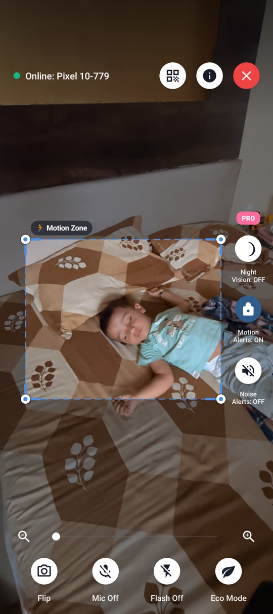
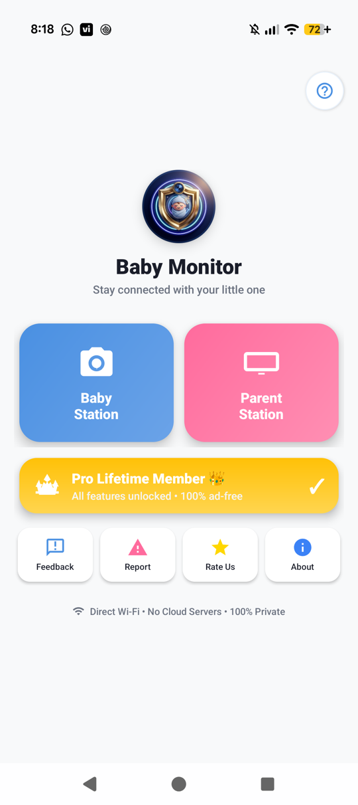
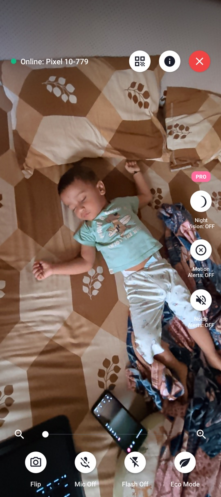
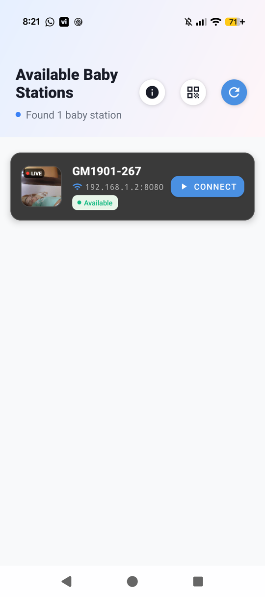

Instant Wi-Fi & QR Pairing
Automatically discovers nearby Baby Stations on your local Wi-Fi, or pair in one second by scanning the on-screen QR code.
Repurpose an old Android phone as a private nursery camera or nanny cam over home Wi-Fi or a hotspot — even without internet. Watch on a second phone or any web browser on your laptop, Mac, iPad, or Smart TV with zero cloud servers or sign-ups.


Designed to run reliably overnight on both spare older Android phones and modern flagship devices.
Automatically discovers nearby Baby Stations on your local Wi-Fi, or pair in one second by scanning the on-screen QR code.
Drag viewfinder brackets directly over your baby's crib or bed so motion alerts focus on your child and ignore fans or curtains.
Adaptive room-noise calibration learns your nursery's ambient sound floor and alerts the Parent Station when crying or loud sounds occur.
Boosts low-light camera visibility in dark rooms, with quick remote torch control (rear camera) or a gentle soft-screen nightlight (front camera).
Keep watching a compact floating live feed while browsing, texting, or working in other apps — complete with one-tap mute and live alert badges.
Dim the nursery screen with Eco Mode for overnight use, plus double-tap lens flip, pinch/slider zoom, snapshots, mirror, and rotation controls.
No registration, no email verification, and no complicated router configuration.
Connect your nursery phone (even an old spare Android) and your parent device to the same home Wi-Fi or mobile hotspot.
Tap Baby Station on the nursery phone, position the camera facing the crib, and optionally set up your Motion Zone or Eco Mode.
Tap Parent Station on your own phone to auto-connect, scan the QR code, or open the local web URL in any browser.
Clean, clutter-free controls built for exhausted parents checking in during the night.
Choose Baby Station or Parent Station in a single tap with zero account creation.
Resize the detection zone over the crib and toggle Night Vision, Sound Alerts, or Eco Mode.

Adjust zoom, flip between front and rear lenses, toggle flash, or share QR link to any browser.

Automatically finds your Baby Station on Wi-Fi with a live preview thumbnail and one-tap Connect.
Designed specifically for parents who want private nursery monitoring on an existing spare Android phone without monthly fees or cloud risks.
| Feature | Baby Monitor for Parents | Typical Cloud Baby Monitor Apps |
|---|---|---|
| Privacy & Video Routing | 100% local Wi-Fi (peer-to-peer, zero cloud servers) | Relays video/audio through remote cloud servers |
| Account / Sign-Up | No login or email required | Account registration required on both devices |
| Pricing Model | Free core streaming; optional 12h ad pass or 1-time Pro unlock | Often requires $5–$15/month recurring subscription |
| Works Without Internet | Yes — local Wi-Fi router or personal mobile hotspot | No — requires active external internet |
| Watch on Laptop / TV / iPhone | Built-in web link works in any modern browser | Restricted to paid tiers or specific apps |
| Crib-Only Motion Alerts | Custom resizable Motion Zone (ROI) + adaptive cry alerts | Basic full-frame motion alerts or paywalled |
Answers to common questions about privacy, browser viewing, and overnight reliability.
Yes! As long as both devices are on the same local Wi-Fi network (or one phone creates a personal Wi-Fi hotspot for the other), video and audio stream locally with no internet required.
No. Baby Monitor runs a local streaming server directly on the nursery phone inside your Wi-Fi network. No video, audio, or personal login data ever touches a cloud server.
Yes. Tap the Info (i) icon on the Baby Station screen to copy or scan the local web dashboard address (such as http://192.168.1.x:8080) and open it in any web browser on the same Wi-Fi.
Never. Core live streaming is free. Optional Pro features (Custom Motion Zones, Smart Noise Alerts, Night Vision, and ad-free viewing) can be unlocked free for 12 hours by watching one short rewarded video, or permanently with a single one-time Lifetime Pro upgrade.
Baby Monitor for Parents supports Android 7.0 (API 24) and above, making it ideal for repurposing older spare Android phones alongside newer flagship devices.
Download Baby Monitor for Parents on Google Play today and set up a private local Wi-Fi nursery monitor in seconds.
Download Free on Google Play